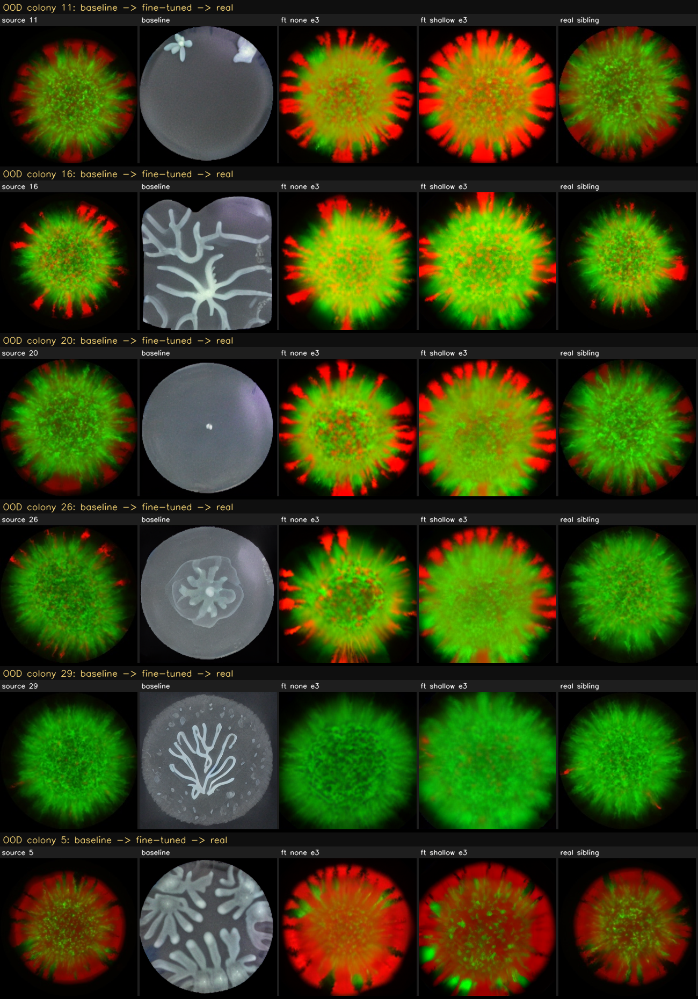
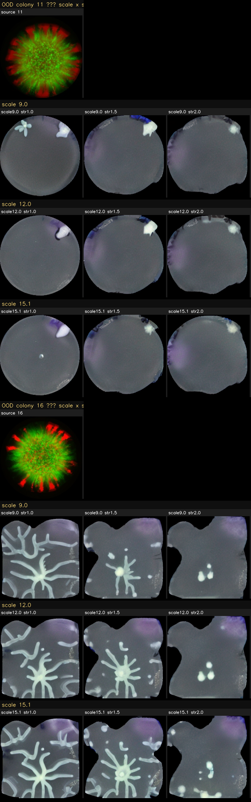
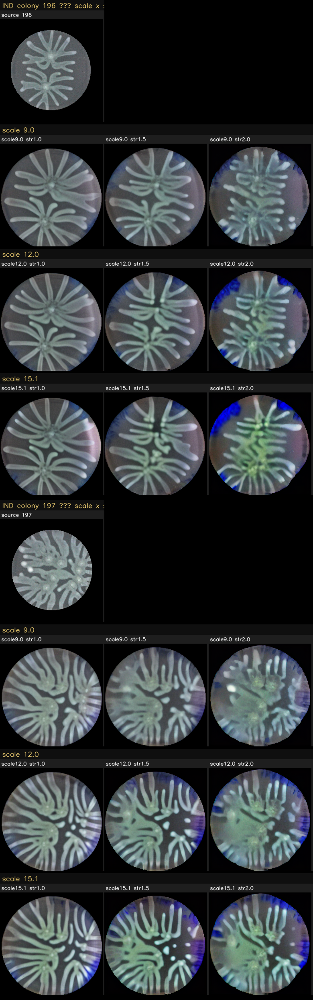

| tag | FID | diversity | realism_vs_sibling | baseline_real_vs_real |
|---|---|---|---|---|
| baseline_fulldata | 358.88 | 0.3662 | 0.8202 | 0.3233 |
| lr5e-6_epoch=1 | 92.07 | 0.3042 | 0.386 | 0.3233 |
| none_lr5e-6_epoch=0 | 103.52 | 0.3133 | 0.3927 | 0.3233 |
| none_lr5e-6_epoch=1 | 106.14 | 0.3256 | 0.4104 | 0.3233 |
| none_lr5e-6_epoch=2 | 107.02 | 0.3252 | 0.4104 | 0.3233 |
| none_lr5e-6_epoch=3 | 98.84 | 0.3291 | 0.387 | 0.3233 |
| shallow_lr5e-6_epoch=0 | 110.4 | 0.3465 | 0.379 | 0.3233 |
| shallow_lr5e-6_epoch=1 | 99.9 | 0.3385 | 0.3826 | 0.3233 |
| shallow_lr5e-6_epoch=2 | 91.33 | 0.3406 | 0.3762 | 0.3233 |
| shallow_lr5e-6_epoch=3 | 89.64 | 0.3332 | 0.3741 | 0.3233 |
| target | scale | strength | FID | diversity | realism_vs_sibling | baseline_real_vs_real |
|---|---|---|---|---|---|---|
| OOD | 12.0 | 1.0 | 348.1 | 0.3968 | 0.8224 | 0.3233 |
| OOD | 12.0 | 1.5 | 348.92 | 0.4014 | 0.8742 | 0.3233 |
| OOD | 12.0 | 2.0 | 360.12 | 0.4241 | 0.8956 | 0.3233 |
| OOD | 15.1 | 1.0 | 342.82 | 0.3532 | 0.8238 | 0.3233 |
| OOD | 15.1 | 1.5 | 341.39 | 0.4021 | 0.8632 | 0.3233 |
| OOD | 15.1 | 2.0 | 343.3 | 0.49 | 0.8804 | 0.3233 |
| OOD | 9.0 | 1.0 | 358.88 | 0.3662 | 0.8202 | 0.3233 |
| OOD | 9.0 | 1.5 | 340.0 | 0.379 | 0.8701 | 0.3233 |
| OOD | 9.0 | 2.0 | 354.96 | 0.3285 | 0.9109 | 0.3233 |
| IND | 12.0 | 1.0 | 88.59 | 0.3006 | 0.3701 | 0.2606 |
| IND | 12.0 | 1.5 | 100.19 | 0.3245 | 0.3728 | 0.2606 |
| IND | 12.0 | 2.0 | 125.67 | 0.3242 | 0.3892 | 0.2606 |
| IND | 15.1 | 1.0 | 95.54 | 0.3154 | 0.3834 | 0.2606 |
| IND | 15.1 | 1.5 | 107.7 | 0.34 | 0.3955 | 0.2606 |
| IND | 15.1 | 2.0 | 133.88 | 0.3456 | 0.4184 | 0.2606 |
| IND | 9.0 | 1.0 | 82.67 | 0.2859 | 0.3572 | 0.2606 |
| IND | 9.0 | 1.5 | 91.89 | 0.3051 | 0.3555 | 0.2606 |
| IND | 9.0 | 2.0 | 119.81 | 0.3049 | 0.3648 | 0.2606 |


